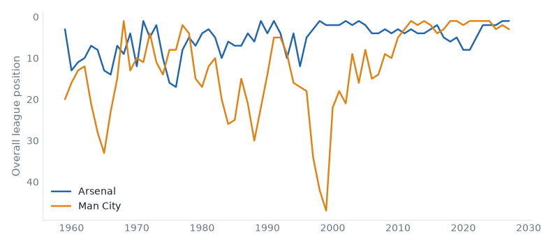
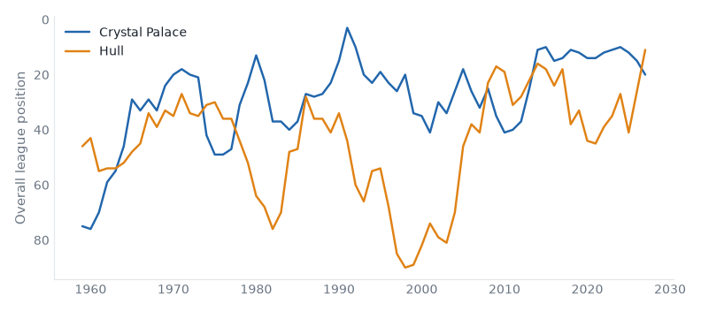
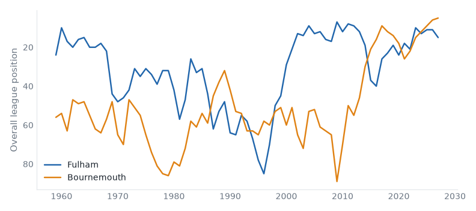
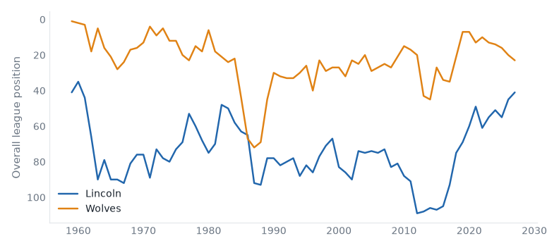
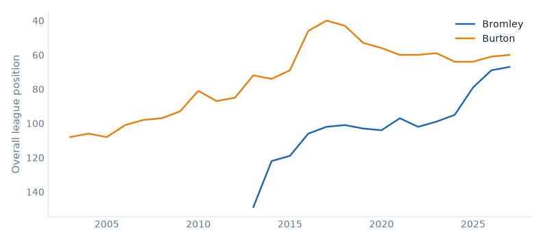
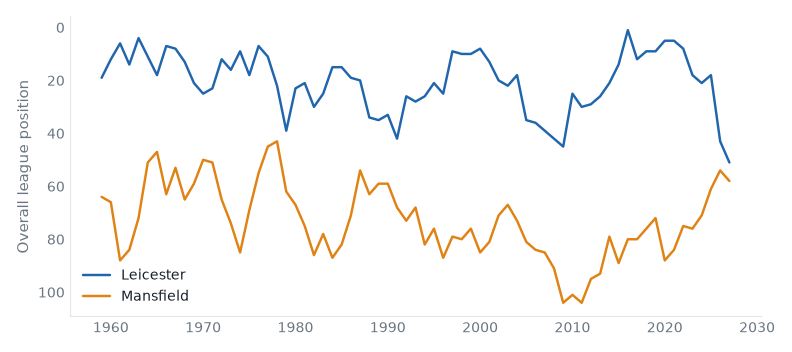

The Week Ahead
57 fixtures across 5 divisions, week of 27 November 2026.
Midweek
Premier League
Championship
| Tue | Bristol City | 1–1 | Wrexham |
| Tue | Cardiff | 0–4 | Preston |
| Tue | Charlton | 4–0 | Lincoln |
| Tue | Middlesbrough | 2–1 | Swansea |
| Tue | Norwich | 1–1 | QPR |
| Tue | Portsmouth | 1–0 | West Ham |
| Tue | Sheffield United | 1–1 | Southampton |
| Tue | Wolves | 3–0 | Derby |
| Wed | Bolton | 1–3 | West Brom |
| Wed | Burnley | 0–2 | Birmingham |
| Wed | Stoke | 2–1 | Millwall |
| Wed | Watford | 0–1 | Blackburn |
League One
| Tue | Blackpool | 1–1 | Leicester |
| Tue | Bradford | 3–0 | Barnsley |
| Tue | Bromley | 1–1 | Wycombe |
| Tue | Stevenage | 0–0 | Sheffield Weds |
League Two
| Tue | Crawley Town | 0–0 | Barnet |
| Tue | Port Vale | 1–1 | Northampton |
National League
| Tue | Altrincham | 3–0 | Wealdstone |
| Tue | Boston Utd | 0–1 | Barrow |
| Tue | Carlisle | 1–2 | Tamworth |
| Tue | Eastleigh | 1–3 | Yeovil |
| Tue | Forest Green | 0–2 | Southend |
| Tue | Fylde | 0–2 | Halifax |
| Tue | Hornchurch | 0–0 | Sutton |
| Tue | Scunthorpe | 1–2 | Gateshead |
| Tue | Woking | 4–3 | Worthing |
| Wed | Boreham Wood | 4–1 | Aldershot |
| Wed | Harrogate | 3–1 | Kidderminster |
| Wed | Hartlepool | 2–0 | Solihull |
Premier League
Arsenal host Man City in the Premier League on Sunday 29 November. Arsenal have never played outside the Premier League; they sit 1st with 28 points from 11 games, form DWWWW. Manchester City belong in the Premier League — 83% of their 69 recorded seasons; they sit 3rd with 22 points from 11 games, form DLLLW. They have met 112 times in league play since 1958/59: Arsenal 51 wins, Manchester City 32, 29 drawn.

| Season | Division | Pos | Pts | |
|---|
| 2026/27 | Premier League | 1st | 28 | In progress |
| 2025/26 | Premier League | 1st | 85 | Champions |
| 2024/25 | Premier League | 2nd | 74 | |
| 2023/24 | Premier League | 2nd | 89 | |
| 2022/23 | Premier League | 2nd | 84 | |
|
| Season | Division | Pos | Pts | |
|---|
| 2026/27 | Premier League | 3rd | 22 | In progress |
| 2025/26 | Premier League | 2nd | 78 | |
| 2024/25 | Premier League | 3rd | 71 | |
| 2023/24 | Premier League | 1st | 91 | Champions |
| 2022/23 | Premier League | 1st | 89 | Champions |
|
Crystal Palace host Hull in the Premier League on Sunday 29 November. Crystal Palace live between the Premier League and the Championship; they are 14 seasons into a spell 1 division above that; they sit 20th with 7 points from 11 games, form LLLLL. Hull City live between the Championship and League One; this season is their highest since 2017; they sit 11th with 14 points from 11 games, form WLDDL. They have met 42 times in league play since 1961/62: Crystal Palace 14 wins, Hull City 14, 14 drawn.

| Season | Division | Pos | Pts | |
|---|
| 2026/27 | Premier League | 20th | 7 | In progress |
| 2025/26 | Premier League | 15th | 45 | |
| 2024/25 | Premier League | 12th | 53 | |
| 2023/24 | Premier League | 10th | 49 | |
| 2022/23 | Premier League | 11th | 45 | |
|
| Season | Division | Pos | Pts | |
|---|
| 2026/27 | Premier League | 11th | 14 | In progress |
| 2025/26 | Championship | 6th | 73 | Play-off Promoted |
| 2024/25 | Championship | 21st | 49 | |
| 2023/24 | Championship | 7th | 70 | |
| 2022/23 | Championship | 15th | 58 | |
|
Fulham host Bournemouth in the Premier League on Sunday 29 November. Fulham live between the Premier League and the Championship; they are 5 seasons into a spell 1 division above that; they sit 15th with 11 points from 11 games, form DDDWW. Bournemouth live between League One and League Two; they are 5 seasons into a spell 2 divisions above that; they sit 5th with 18 points from 11 games, form WWWWW. They have met 30 times in league play since 1969/70: Fulham 4 wins, Bournemouth 15, 11 drawn.

| Season | Division | Pos | Pts | |
|---|
| 2026/27 | Premier League | 15th | 11 | In progress |
| 2025/26 | Premier League | 11th | 52 | |
| 2024/25 | Premier League | 11th | 54 | |
| 2023/24 | Premier League | 13th | 47 | |
| 2022/23 | Premier League | 10th | 52 | |
|
| Season | Division | Pos | Pts | |
|---|
| 2026/27 | Premier League | 5th | 18 | In progress |
| 2025/26 | Premier League | 6th | 57 | |
| 2024/25 | Premier League | 9th | 56 | |
| 2023/24 | Premier League | 12th | 48 | |
| 2022/23 | Premier League | 15th | 39 | |
|
Ipswich v Aston Villa
Sat 28 Nov · above level compare
Ipswich Town 16th (LLDDL), Aston Villa 12th (DDDWW). At least one of them sits above where their record says they belong.
Man United v Brentford
Sat 28 Nov · 2 above level compare
Manchester United 19th (LDLLD), Brentford 6th (WLWDL). At least one of them sits above where their record says they belong.
| Fri 27 | Nott'm Forest v Chelsea | yo-yo club | compare |
| Sat 28 | Leeds v Coventry | yo-yo club | compare |
| Sun 29 | Brighton v Newcastle | above level | compare |
| Sun 29 | Everton v Liverpool | derby, 2 miles | compare |
| Sun 29 | Sunderland v Tottenham | above level | compare |
Championship
Lincoln host Wolves in the Championship on Saturday 28 November. Lincoln City live between League One and League Two; this season is their highest since 1961; they sit 21st with 15 points from 17 games, form LLLLL. Wolverhampton Wanderers live between the Premier League and the Championship; they sit 3rd with 34 points from 17 games, form WWDWW. They have met 4 times in league play since 1985/86: Lincoln City 1 wins, Wolverhampton Wanderers 2, 1 drawn.

| Season | Division | Pos | Pts | |
|---|
| 2026/27 | Championship | 21st | 15 | In progress |
| 2025/26 | League One | 1st | 103 | Champions |
| 2024/25 | League One | 11th | 61 | |
| 2023/24 | League One | 7th | 74 | |
| 2022/23 | League One | 11th | 62 | |
|
| Season | Division | Pos | Pts | |
|---|
| 2026/27 | Championship | 3rd | 34 | In progress |
| 2025/26 | Premier League | 20th | 20 | Relegated |
| 2024/25 | Premier League | 16th | 42 | |
| 2023/24 | Premier League | 14th | 46 | |
| 2022/23 | Premier League | 13th | 41 | |
|
Wrexham v Portsmouth
Sat 28 Nov · 2 above level compare
Wrexham 14th (DWDWL), Portsmouth 10th (WDLWD). At least one of them sits above where their record says they belong.
| Fri 27 | Southampton v Middlesbrough | below level | compare |
| Sat 28 | Birmingham v Bolton | yo-yo club | compare |
| Sat 28 | Blackburn v Charlton | neighbours | compare |
| Sat 28 | Derby v Watford | | compare |
| Sat 28 | Millwall v Burnley | yo-yo club | compare |
| Sat 28 | Preston v Norwich | yo-yo club | compare |
| Sat 28 | QPR v Sheffield United | neighbours | compare |
| Sat 28 | West Brom v Bristol City | below level | compare |
| Sat 28 | West Ham v Stoke | below level | compare |
| Sun 29 | Swansea v Cardiff | derby, 34 miles | compare |
League One
Bromley host Burton in League One on Saturday 28 November. Bromley belong in the National League — 60% of their 15 recorded seasons; this season is the highest in their record; they sit 23rd with 13 points from 15 games, form DWLLD. Burton Albion are, on the balance of their record, a League Two club; they are 9 seasons into a spell 1 division above that; they sit 16th with 17 points from 16 games, form LLLWD.

| Season | Division | Pos | Pts | |
|---|
| 2026/27 | League One | 23rd | 13 | In progress |
| 2025/26 | League Two | 1st | 87 | Champions |
| 2024/25 | League Two | 11th | 66 | |
| 2023/24 | National League | 3rd | 81 | Play-off Promoted |
| 2022/23 | National League | 7th | 71 | |
|
| Season | Division | Pos | Pts | |
|---|
| 2026/27 | League One | 16th | 17 | In progress |
| 2025/26 | League One | 17th | 54 | |
| 2024/25 | League One | 20th | 47 | |
| 2023/24 | League One | 20th | 46 | |
| 2022/23 | League One | 15th | 56 | |
|
Leicester host Mansfield in League One on Saturday 28 November. Leicester City live between the Premier League and the Championship; they are 2 divisions below that now; they sit 7th with 23 points from 15 games, form DWDWL. Mansfield Town live between League One and League Two; they are 3 seasons into a spell 1 division above that; they sit 14th with 20 points from 14 games, form DDLWW.

| Season | Division | Pos | Pts | |
|---|
| 2026/27 | League One | 7th | 23 | In progress |
| 2025/26 | Championship | 23rd | 46 | Relegated |
| 2024/25 | Premier League | 18th | 25 | Relegated |
| 2023/24 | Championship | 1st | 97 | Champions |
| 2022/23 | Premier League | 18th | 34 | Relegated |
|
| Season | Division | Pos | Pts | |
|---|
| 2026/27 | League One | 14th | 20 | In progress |
| 2025/26 | League One | 10th | 65 | |
| 2024/25 | League One | 17th | 54 | |
| 2023/24 | League Two | 3rd | 86 | Promoted |
| 2022/23 | League Two | 8th | 75 | |
|
AFC Wimbledon v Barnsley
Sat 28 Nov · fallen giant compare
AFC Wimbledon 18th (LWLDL), Barnsley 24th (LLLDL). Barnsley have played in the top flight.
Luton v Oxford
Sat 28 Nov · fallen giant compare
Luton Town 5th (WDWWW), Oxford United 3rd (WWDWD). Luton Town have played in the top flight.
| Sat 28 | Milton Keynes Dons v Notts County | fallen giant | compare |
| Sat 28 | Peterboro v Cambridge | above level | compare |
| Sat 28 | Sheffield Weds v Reading | fallen giant | compare |
| Sat 28 | Stevenage v Blackpool | fallen giant | compare |
| Sat 28 | Stockport v Leyton Orient | fallen giant | compare |
| Sat 28 | Wigan v Plymouth | fallen giant | compare |
| Sat 28 | Wycombe v Bradford | fallen giant | compare |
League Two
Rotherham v Oldham
Sat 28 Nov · fallen giant compare
Rotherham United 23rd (DLDDL), Oldham Athletic 20th (DLWLD). Oldham Athletic have played in the top flight.
| Sat 28 | Bristol Rvs v Tranmere | below level | compare |
| Sat 28 | Colchester v York | yo-yo club | compare |
| Sat 28 | Crewe v Grimsby | below level | compare |
| Sat 28 | Exeter v Crawley Town | yo-yo club | compare |
| Sat 28 | Fleetwood Town v Accrington | below level | compare |
| Sat 28 | Port Vale v Newport County | below level | compare |
| Sat 28 | Rochdale v Barnet | above level | compare |
| Sat 28 | Salford v Gillingham | below level | compare |
| Sat 28 | Shrewsbury v Cheltenham | below level | compare |
| Sat 28 | Swindon v Chesterfield | fallen giant | compare |
| Sat 28 | Walsall v Northampton | fallen giant | compare |
National League
Altrincham v Worthing
Sat 28 Nov · 2 above level compare
Altrincham 10th (WLLLD), Worthing 7th (LWDLD). At least one of them sits above where their record says they belong.
Carlisle v Sutton
Sat 28 Nov · fallen giant compare
Carlisle United 6th (LWWWW), Sutton United 11th (DWLWW). Carlisle United have played in the top flight.
| Fri 27 | Scunthorpe v Wealdstone | below level | compare |
| Sat 28 | Boreham Wood v Gateshead | | compare |
| Sat 28 | Boston Utd v Kidderminster | | compare |
| Sat 28 | Eastleigh v Halifax | below level | compare |
| Sat 28 | Forest Green v Tamworth | neighbours | compare |
| Sat 28 | Fylde v Aldershot | below level | compare |
| Sat 28 | Harrogate v Yeovil | top-three clash | compare |
| Sat 28 | Hartlepool v Southend | 2 below level | compare |
| Sat 28 | Hornchurch v Solihull | 2 above level | compare |
| Sat 28 | Woking v Barrow | relegated last season | compare |
Reviewed on
Monday review, tiers 1–2 and Tuesday review, tiers 3–5.
Built from the English football database, tiers 1–5 from 1958/59.
Results from football-data.co.uk.
Archived copy.